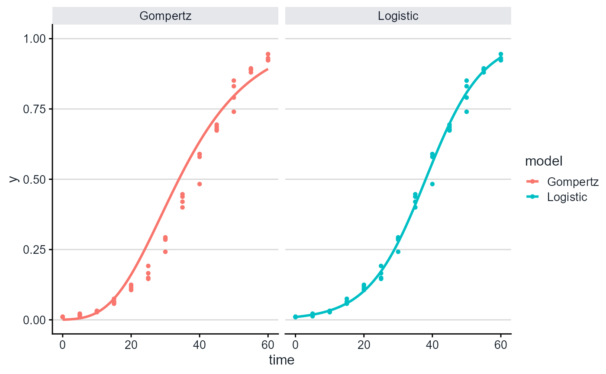

Choosing and fitting disease progress models
Kaique S. Alves
2026-05-17
Source:vignettes/model-fitting.Rmd
model-fitting.Rmd
library(epifitter)
library(dplyr)
library(ggplot2)
library(cowplot)
theme_set(cowplot::theme_half_open(font_size = 12))Overview
Disease progress models are simplified descriptions of epidemic development. They are useful when the goal is to estimate biologically interpretable features such as initial disease intensity, apparent infection rate, or an upper asymptote. They should not be selected only because a curve looks smooth or because a single fit statistic is largest.
This article explains the main model-fitting workflows in
epifitter:
-
fit_lin()for linearized model comparison; -
fit_nlin()for nonlinear fitting of two-parameter models; -
fit_nlin2()for nonlinear fitting when the asymptoteKshould be estimated.
Use fit_lin() for quick screening and teaching. Use
nonlinear fitting when you want to fit the model on the original disease
intensity scale. Use fit_nlin2() when the epidemic appears
to plateau below 1 and estimating the maximum disease intensity is
scientifically meaningful.
Compare models quickly with fit_lin()
Linearized models transform disease intensity before fitting a straight line. This is fast and often useful for model comparison, but transformations also change the error scale. Always inspect the fitted curves on the original disease intensity scale.
set.seed(1)
epi <- sim_logistic(N = 60, y0 = 0.01, dt = 5, r = 0.12, alpha = 0.2, n = 4)
fit_lin_out <- fit_lin(time = epi$time, y = epi$random_y)
knitr::kable(fit_lin_out$stats_all, digits = 4)| best_model | model | r | r_se | r_ci_lwr | r_ci_upr | v0 | v0_se | r_squared | RSE | CCC | y0 | y0_ci_lwr | y0_ci_upr |
|---|---|---|---|---|---|---|---|---|---|---|---|---|---|
| 1 | Logistic | 0.1202 | 0.0011 | 0.1180 | 0.1224 | -4.5730 | 0.0394 | 0.9957 | 0.1504 | 0.9979 | 0.0102 | 0.0095 | 0.0111 |
| 2 | Gompertz | 0.0694 | 0.0022 | 0.0649 | 0.0739 | -1.9893 | 0.0792 | 0.9505 | 0.3021 | 0.9746 | 0.0007 | 0.0002 | 0.0020 |
| 3 | Exponential | 0.0780 | 0.0029 | 0.0722 | 0.0839 | -4.0617 | 0.1032 | 0.9346 | 0.3938 | 0.9662 | 0.0172 | 0.0140 | 0.0212 |
| 4 | Monomolecular | 0.0422 | 0.0028 | 0.0366 | 0.0478 | -0.5113 | 0.0983 | 0.8215 | 0.3751 | 0.9020 | -0.6674 | -1.0315 | -0.3687 |

Nonlinear fitting with starting values
fit_nlin() fits the same candidate models directly to
the original disease intensity values. Nonlinear optimization needs
starting values, so poor starts or weakly informative data can lead to
non-convergence. When this happens, inspect the curve, adjust
starting_par, and consider whether the chosen model is
identifiable from the observed time points.
Weighted nonlinear fitting
By default, fit_nlin() and fit_nlin2() use
ordinary nonlinear least squares. This gives every observation the same
weight and is consistent with many traditional disease progress curve
workflows. For disease incidence or severity measured as a proportion,
however, residual variability may change across the epidemic. For
example, binomial-like measurements often have variance related to
,
where
is the fitted disease intensity.
epifitter therefore allows optional weighted nonlinear
least squares. These options are working variance assumptions, not a
substitute for a full binomial or beta likelihood. The default is
unchanged:
fit_nlin(
time = epi$time,
y = epi$random_y,
weight_method = "none"
)To use a two-step binomial-like weighting approximation, use
weight_method = "binomial". The model is first fitted
without weights, fitted values are used to construct weights, and the
model is then refitted using
.
fit_weighted <- fit_nlin(
time = epi$time,
y = epi$random_y,
weight_method = "binomial",
weight_eps = 0.01
)
fit_weighted$stats_allOther built-in weighting rules are available for sensitivity analyses:
-
weight_method = "mean"uses , a mean-dependent variance approximation. -
weight_method = "cv"uses , corresponding to roughly constant coefficient of variation. -
weight_method = "power"uses , whereweight_powercontrols .
These options follow the practical idea of modeling non-constant variance without leaving the nonlinear least-squares framework. They are not universal defaults. Use them as sensitivity analyses, and prefer the rule that best matches how the disease intensity was measured.
fit_cv <- fit_nlin(
time = epi$time,
y = epi$random_y,
weight_method = "cv"
)
fit_power <- fit_nlin(
time = epi$time,
y = epi$random_y,
weight_method = "power",
weight_power = 0.5
)You can also provide your own positive weights. This is useful when
weights come from sample sizes, known measurement precision, or a
variance model chosen outside epifitter.
custom_weights <- rep(1, nrow(epi))
fit_custom <- fit_nlin(
time = epi$time,
y = epi$random_y,
weights = custom_weights
)For advanced use, weights can also be a function. The
function receives a data frame with time, y,
predicted, and model, and must return one
positive weight per observation.
fit_custom_fun <- fit_nlin(
time = epi$time,
y = epi$random_y,
weights = function(data) {
1 / (data$predicted + 0.05)
}
)For grouped nonlinear fitting, use weight_method for the
same strategy across all curves, or weights_col when
weights are stored in the data.
multi_weighted <- fit_multi(
time_col = "time",
intensity_col = "random_y",
data = multi_epi,
strata_cols = "curve",
nlin = TRUE,
weight_method = "binomial"
)Weighted fits are assumptions, not automatic improvements. They are most useful when residual diagnostics or the sampling design suggest heteroscedasticity. Compare weighted and unweighted fits, inspect residuals, and report the chosen weighting rule.
Estimate K when the epidemic plateaus below 1
The two-parameter monomolecular, logistic, and Gompertz models assume
a fixed maximum disease intensity of 1. In real epidemics, disease may
plateau below 1 because of host resistance, limited favorable
conditions, management, sampling scale, or a short observation window.
In those cases, fit_nlin2() estimates the upper asymptote
K.
Grouped fitting with fit_multi()
Use fit_multi() when the same model-fitting workflow
should be repeated for many curves, such as treatment-by-block
combinations, cultivars, sites, or isolates. Keep grouping variables
aligned with the experimental unit.
epi1 <- sim_gompertz(N = 50, y0 = 0.001, dt = 5, r = 0.08, alpha = 0.2, n = 3)
epi2 <- sim_gompertz(N = 50, y0 = 0.002, dt = 5, r = 0.11, alpha = 0.2, n = 3)
multi_epi <- bind_rows(epi1, epi2, .id = "curve")
multi_fit <- fit_multi(
time_col = "time",
intensity_col = "random_y",
data = multi_epi,
strata_cols = "curve"
)
knitr::kable(head(multi_fit$Parameters), digits = 4)| curve | best_model | model | r | r_se | r_ci_lwr | r_ci_upr | v0 | v0_se | r_squared | RSE | CCC | y0 | y0_ci_lwr | y0_ci_upr |
|---|---|---|---|---|---|---|---|---|---|---|---|---|---|---|
| 1 | 1 | Gompertz | 0.0813 | 0.0016 | 0.0780 | 0.0846 | -1.9382 | 0.0480 | 0.9878 | 0.1475 | 0.9939 | 0.0010 | 0.0005 | 0.0018 |
| 1 | 2 | Logistic | 0.1623 | 0.0091 | 0.1438 | 0.1808 | -5.1753 | 0.2685 | 0.9116 | 0.8244 | 0.9537 | 0.0056 | 0.0033 | 0.0097 |
| 1 | 3 | Monomolecular | 0.0449 | 0.0026 | 0.0396 | 0.0502 | -0.3618 | 0.0769 | 0.9058 | 0.2360 | 0.9506 | -0.4359 | -0.6796 | -0.2276 |
| 1 | 4 | Exponential | 0.1174 | 0.0111 | 0.0948 | 0.1400 | -4.8135 | 0.3276 | 0.7838 | 1.0058 | 0.8788 | 0.0081 | 0.0042 | 0.0158 |
| 2 | 1 | Gompertz | 0.1126 | 0.0015 | 0.1095 | 0.1157 | -1.8561 | 0.0448 | 0.9944 | 0.1377 | 0.9972 | 0.0017 | 0.0009 | 0.0029 |
| 2 | 2 | Monomolecular | 0.0802 | 0.0035 | 0.0729 | 0.0874 | -0.5657 | 0.1050 | 0.9427 | 0.3224 | 0.9705 | -0.7606 | -1.1810 | -0.4212 |
| curve | time | y | model | linearized | predicted | residual |
|---|---|---|---|---|---|---|
| 1 | 0 | 0.0011 | Exponential | -6.8418 | 0.0081 | -0.0071 |
| 1 | 0 | 0.0011 | Monomolecular | 0.0011 | -0.4359 | 0.4370 |
| 1 | 0 | 0.0011 | Logistic | -6.8408 | 0.0056 | -0.0046 |
| 1 | 0 | 0.0011 | Gompertz | -1.9231 | 0.0010 | 0.0001 |
| 1 | 5 | 0.0076 | Exponential | -4.8831 | 0.0146 | -0.0070 |
| 1 | 5 | 0.0076 | Monomolecular | 0.0076 | -0.1473 | 0.1549 |
Practical reporting
When reporting fitted disease progress models, include:
- the disease metric and scale, such as severity proportion or incidence proportion;
- the time scale and assessment schedule;
- the model family and whether
Kwas fixed or estimated; - whether the fit used ordinary or weighted nonlinear least squares;
- the weighting rule, if any;
- convergence issues or models that failed to fit;
- uncertainty intervals or sensitivity analyses when they inform interpretation.